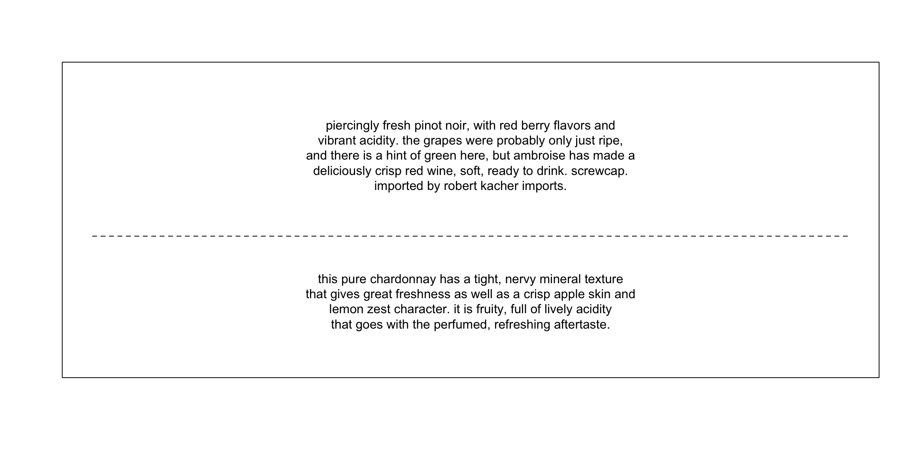
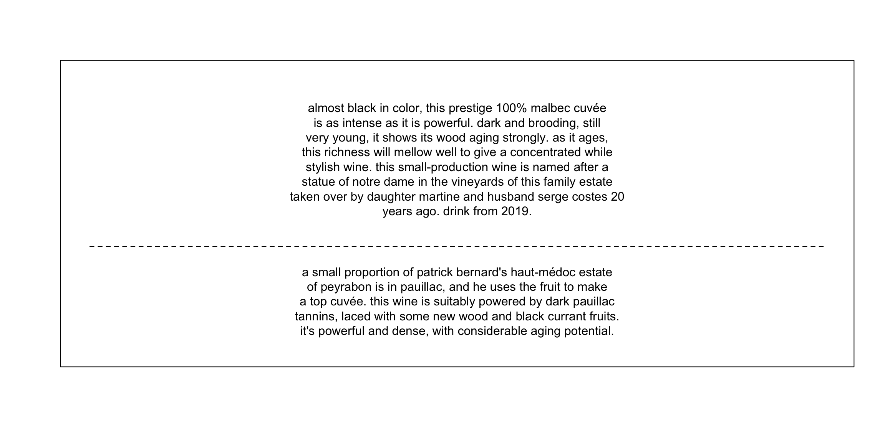
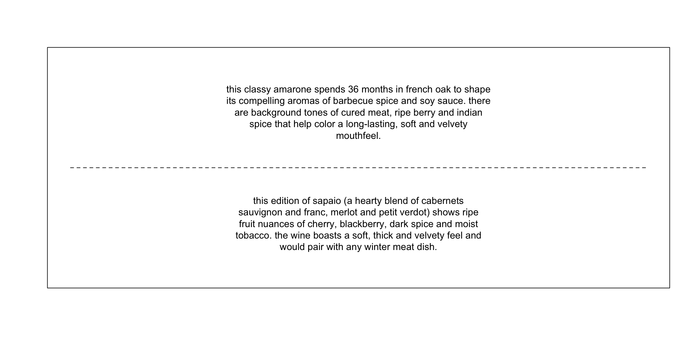
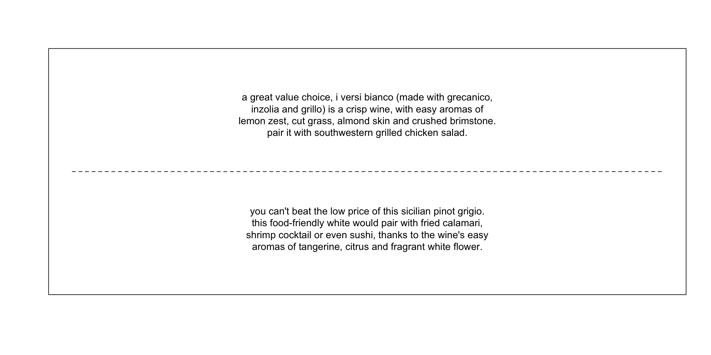

In this post I undertake a text-mining analysis of wine reviews obtained from Kaggle. I show that using both tf-idf and topic-modelling provides interesting insights into the words used to describe wines of different countries.
The following analysis uses the wine review data from Kaggle. It (the data) contains 14 columns, but we are only going to be concerned with three: country, the country from which the wine originated; description, the review of the wine; and variety, the grape type. With the removal of duplicates and rows containing missing values, the data contains 89123 rows.
For this post, the following steps will be taken in the analysis:
Keywords will be identified using tf-idf, which involves weighting the frequency of a term within a document by the frequency of a word across documents. In other words, if a word is not found across many documents it can be thought of as important to the document in question.
Below, we explore tf-idf in relation to the variables of country and variety of wines. For each variable, we are only taking a subset of the data, especially when we have 46 and 619 unique countries and varieties, respectively.
Figure 1 presents the keywords associated with the wine of 11 different countries. For most cases, the top word is the main variety of wine for the country (e.g., Malbec is the leading grape in Argentina). Beyond the grape names, we can see that the remaining words are descriptors of the wine itself. Taking France as an example, we can see that the wine is described by the words fruits, wood, and character.
Figure 1: Top keywords associated with the wines of 11 different countries based on tf-idf values. In majority of cases, the first word in each sub-plot is the wine variety for that country. Beyond this, it can be seen that different words are used to describe the wines of the country. For example, Picpoul is associated with the words apply, brisk, and kumquat.
Figure 2 presents the keywords associated with 13 grape varieties. Here again, we can see the top words are generally the varieties themselves, but the words that follow are, on the whole, adjectives used to describe the wine. Pinot Noir, for instance, is described using the words cherry, cola, and raspberries.
Figure 2: Top keywords associated with the wines of 13 different varieties based on tf-idf values. In majority of cases, the first word in each sub-plot is the wine variety for that country. The words following are descriptors of the wine itself. For example, Rosé is described with the words cherry, strawberry, and raspberry.
Prior to analysing the data with topic modelling, we will reduce the data to a subset of countries, specifically: France, Italy, and Spain. These three countries were selected due to being the largest producers of wine in the world (in 2014). Table 1 presents the number of reviews associated with each of the countries selected for the topic model analysis. Whereas, Table 2 presents the count of varieties within the aforementioned three countries, specifically with a review count value exceeding 1000.
| Country | N |
|---|---|
| Spain | 5370 |
| France | 10185 |
| Italy | 12155 |
| Variety | N |
|---|---|
| Tempranillo | 1348 |
| Sangiovese | 1477 |
| Red Blend | 2909 |
| Chardonnay | 1846 |
| Pinot Noir | 1098 |
| Bordeaux-style Red Blend | 1678 |
The structural topic modelling package is used to analyse the reviews across the three countries (France, Italy, and Spain). In regards to model specification, we specify that the prevalence of a topic varies across country. Therefore, K-1 dummy variables are created with the baseline category being Italy (most frequent category). In addition to this, stemming was applied to the review data and the word ‘wine’ was dropped.
As there was information on the number of topics to extract, we follow a data-driven approach to identifying a suitable number of topics. Below we use the furrr package to run 10 topic models and extract the Exclusivity and Semantic Coherence values from each run. Exclusivity is a measure of how exclusive a word is to a topic; whereas, Semantic Coherence provides a measure of topic coherence (i.e., do the words forming a topic make sense semantically?). As shown in Figure 3 we can see these values (Exclusivity and Semantic Coherence) plotted against one another for models with 8, 10, 14, and 18 topics. If we look at the model with 18 topics, it can be seen that exclusivity is maximised yet semantic coherence becomes a lot lower for certain topics. An 8 topic solution, on the other hand, does show the exclusivity values to be quite spread out, whilst semantic coherence does not appear as problematic. A 10 topic model, does appear as a good balance between exclusivity and semantic coherence, and for this reason it was selected as the candidate model.
k <- seq(2, 20, 2)
tm_model_check <-
furrr::future_map(k, function(topic) {
tm_mod <-
stm(
documents = wine_reviews_prep$documents,
vocab = wine_reviews_prep$vocab,
K = topic,
prevalence = ~ country_France + country_Spain,
data = wine_reviews_prep$meta,
verbose = F
)
exclus <- exclusivity(tm_mod)
sem_coh <- semanticCoherence(tm_mod, wine_reviews_prep$documents)
mod_opt <- list(topic=topic, exclusivity=exclus, semantic_coherence=sem_coh)
return(mod_opt)
})
tm_model_check <-
rbindlist(tm_model_check)
ggplot(tm_model_check[topic %in% c(8,10,14,18)], aes(x = exclusivity, y = semantic_coherence,
colour = as.factor(topic),
shape = as.factor(topic))) +
geom_point(
size = 2.5
) +
labs(
x = "Exclusivity",
y = "Semantic Coherence",
colour = "Topic",
shape = "Topic"
) +
scale_colour_manual(values = wes_palette("Darjeeling1")) +
theme(
legend.position = "bottom",
legend.key = element_rect(
colour = "black",
fill = "white"
),
panel.background = element_rect(
colour = "black",
fill = "white"
)
)
Figure 3: Ten LDA models were ran in increments of 2, starting from a 2 topic model up to a 20 topic model. For each model, the semantic coherence and exclusivity of the topics were extracted. A good balance between exclusitivty and semantic coherence seems to be found with a 10 topic model.
Figure 4 presents the expected topic proportions (based on the document-topic matrix) along with the top five words associated with each topic (based on the word-topic matrix). To flesh out these topics, we will present two relevant quotes for each of the top 4 topics (1, 4, 7, and 9).
Figure 4: Expected topic proportions across wine reviews along with the top 5 words per topic. Topics 1 and 4 appear to be found across a far greater number of wine reviews and appear to refer to the ageing and acidity of wines, respectively. Topic 3, on the other hand, appears to be far less frequent across wine reviews.
As shown in Figure 4, the main words associated with Topic 1 are: acid, flavor, fresh, fruit, and fruiti. The quotes below both use the words fresh and acid to describe the wines, suggesting that Topic 1 is capturing wine acidity. According to this article, the acidity of a wine refers to the “fresh, tart, and sour attributes”.

Topic 4 has the following top words associated with it: fruit, age, tannin, year, and rich (Figure 4). Both quotes that follow describe the wines in relation to the wine’s age, its intensity, and the level of tannins. From this, we can think of Topic 4 as capturing reviews towards those wines that have been aged.

Topic 7 is associated with the following words: spice, cheri, fruit, aroma, and soft (Figure 4). The two quotes associated with this topic show reviews that are centered upon the aroma of the wine, describing such things as the spice and tobacco. This topic can be discerned from Topic 9 as it appears that Topic 7 is specifically describing the aroma of red wines.

Topic 9 is associated with the following words: aroma, white, fruit, fresh, and almond (Figure 4). From both quotes that follow, it can seen that the reviews are focused on the aromas of the wine, describing them in terms of citrus, cut grass, and white flower. As mentioned above, this topic is focused on the aromas of white wines, whilst Topic 7 was capturing reviews describing the aroma of red wines.

As stated above, the topic model included covariates for topic prevalence; these covariates were dummy coded with Italy as the baseline. The plots that follow show the difference between the baseline (Italy) and each condition (France and Spain). To remain consistent with the aforementioned topic modelling results, the covariate effects with only be discussed in relation to Topics 1, 4, 7, and 9.
Figure 5 presents the difference in topic prevalence between France and Italy. For Topic 1 and 4, the prevalence in reviews was greater for wines from France. Topic 7 and 9 were less likely in French wine reviews compared to Italian wine reviews. This may suggest that French wines are fresh and tart, probably when it comes to white wines. Whereas, for red wines they are more likely to be aged and bold in flavour. Italian wines reviews, on the other hand, have a higher propensity of topics associated with the aromas of the wine (i.e., Topics 7 and 9).
Figure 5: Topic prevalence differences between France and Italy (Italy is used as the baseline country).
Figure 6 shows that there are no meaningful differences for the topic prevalence of Topic 1 or 4 between Spain and Italy. As with French wine reviews, Spanish wine reviews are less likely to contain topics about the aromas of the wine.
Figure 6: Topic prevalence differences between Spain and Italy (Italy is used as the baseline country).
Utilising different text-mining approaches, we have been able to explore a collection of wine reviews. Keyword extraction provided a succinct way of summarising wine reviews by both country and variety. Whereas, topic modelling provided greater depth in the exploration of wine reviews, particularly with the inclusion of covariates.